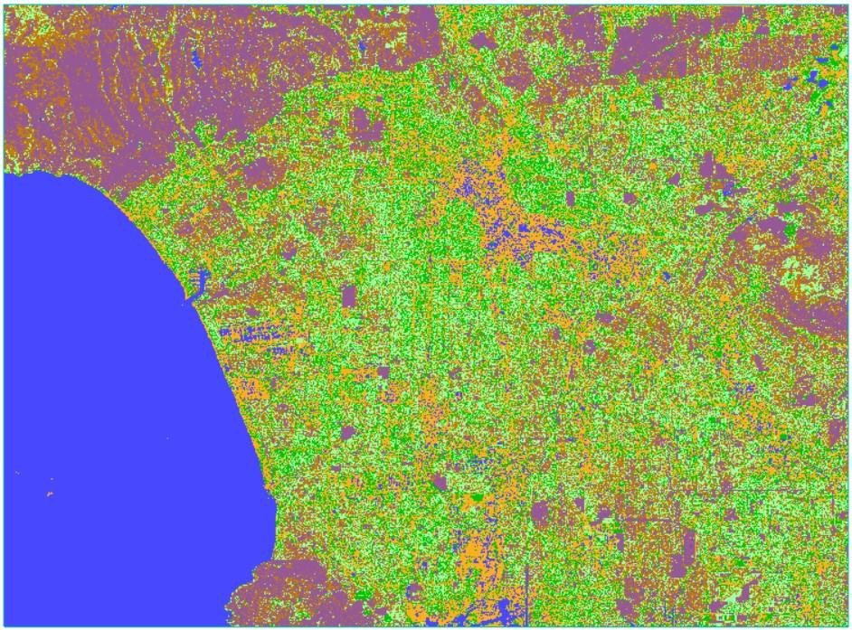

Remote Sensing & Earth Observation
NDVI, Supervised & Unsupervised Classification Studies
A set of short studies computing NDVI and running unsupervised and supervised image classification, each documented step by step.
- Location
- Various study areas
- Year
- 2024
- Client
- Practice studies
- Tools
- ENVI, ArcGIS Pro, Landsat


Approach
- NDVI from red/NIR bands
- Unsupervised clustering
- Supervised classification with training samples
- Reports
Result
Three illustrated reports covering NDVI, unsupervised and supervised classification workflows.
Practice study: course and client details omitted.